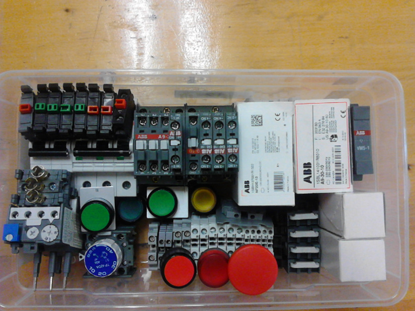

AUTOMATISMOS CABLEADOS: MATERIAL

| Desig. | DESCRIPCION | FABR. | Cant |
REFERENCIA |
| Q | Mag trifasico | ABB | 1 |
S253 ICP M15A |
| Q | Mag monofasico | ABB | 1 |
SH 202 C6 |
| KM | Contactor | ABB | 3 |
A9-30-10 |
| KA | Contc auxiliar | ABB | 1 |
NF22E-13 |
| F | Relé termico | ABB | 1 |
TA25 DU |
| Temp neumatico | ABB | 1 |
TP-40-DA | |
| Cont aux NC | ABB | 2 |
CA5-01 | |
| Cont aux NA | ABB | 2 |
CA5-10 | |
| Encl mecanico | ABB | 1 |
VM5-1 | |
| Final carrera | ABB |
2 |
LS31P11B11 | |
| S |
Pulsador verde | ABB | 2 |
MP1-106 1SFA 611 100 R1002 |
| S |
Pulsador verde con luz |
ABB |
1 |
MP1-116 1SFA 611 100 R1102 |
| S |
Pulsador rojo |
ABB |
1 |
|
| S |
Pulsador rojo o amarillo con luz |
ABB |
1 |
MP1-11Y 1SFA 611 100 R1113 |
| S |
Seta |
ABB |
1 |
|
| H |
Piloto |
ABB |
1 |
ABB ML1-100R 1SFA 611 400 R1001 |
| Camara contactos NA |
ABB |
4 |
SK 616 001-B | |
| Camara contactos NC |
ABB |
3 |
SK 616 001-A | |
| Camara contactos NC |
ABB |
1 |
SK 616 003-A | |
| Portalamparas pulsador |
ABB |
3 |
ABB MLB-3 | |
| Soportes para pulsadores |
ABB |
4 |
||
| Soporte para pulsadores |
3 |
|||
| Bornas 2,5 mm |
ABB |
9 |
||
| Bornas 4 mm |
ABB |
9 |
||
| Botonera 3 huecos |
ABB |
1 |
En la botonera se colocara los dos pulsadores luminosos y la seta.